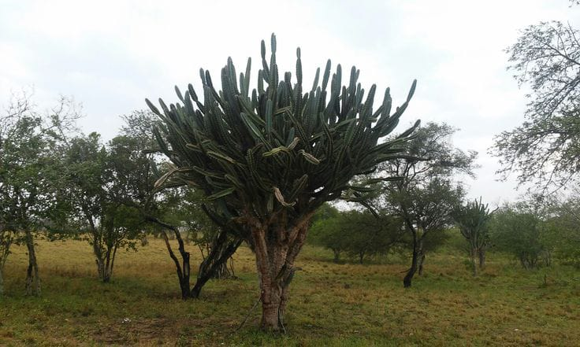
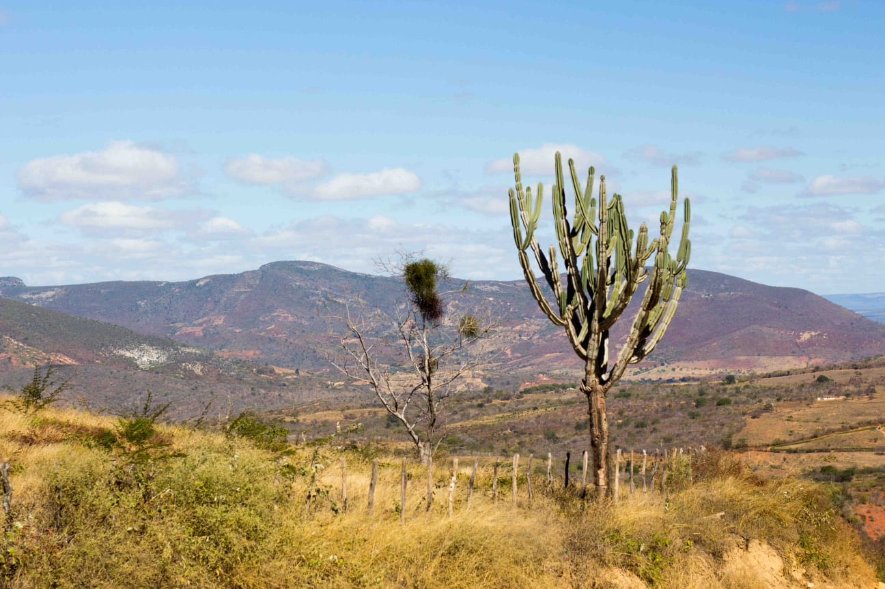
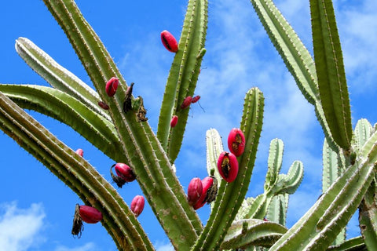
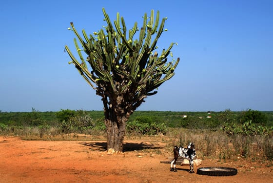

O que é o mandacaru
O mandacaru (Cereus jamacaru) é uma cactácea nativa do Brasil, adaptada às condições climáticas do Semiárido. Conhecida também como cardeiro, a planta alcança até seis metros de altura e possui um formato que pode lembrar um candelabro. O mandacaru é importante para a restauração de solos degradados, serve como cerca natural e alimento para os animais. A planta espinhenta sobrevive às secas devido à sua grande capacidade de captação e retenção de água.
Os frutos e a flor do mandacaru servem de alimento para aves e abelhas. A planta é protegida por uma grossa cutícula que bloqueia a excessiva perda de água. As flores são brancas e desabrocham à noite, murchando ao nascer do sol. O fruto tem cor violeta forte e polpa branca com sementes pretas minúsculas, que servem de alimentos para pessoas e fauna local como as aves regionais.
Após um processo que é iniciado pela retirada do espinho, o mandacaru serve como ração para os animais e é um dos poucos recursos disponíveis em períodos de longa estiagem. O mandacaru é, também, utilizado como planta ornamental, além de batizar o nome de sítios, povoados, bairros e cidades.
O processo de adaptação do mandacaru ao Semiárido durou milhões de anos. A existência da espécie, porém, está em cheque. As ações humanas, com os desmatamentos, e as doenças são ameaças para a permanência desta cactácea no bioma da Caatinga. A extinção do mandacaru representará uma perda para o ambiente e para a agricultura.




